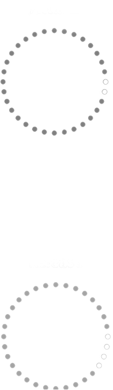

SPECTRAL
GATE 2
Frequency-Selective Gating

"Spectral Gate 2 is the cleanest way to tighten up a mix. It removes everything you don't need without destroying the phase."
What is the Threshold in Spectral Gate?
The Threshold controls which frequencies pass through and which ones get muted or reduced,
but instead of applying it to the whole signal, it works per frequency bin thanks to FFT.
When the energy of a frequency band is above the threshold, it's allowed to pass.
When it's below the threshold, it gets gated, meaning reduced or silenced.
This gives you precise, frequency-dependent control over what stays and what goes.
Why it is special?
Unlike traditional gates that affect the full signal based on overall volume, the Spectral Gate listens to every tiny slice of the spectrum and decides what to let through.
That means you can:
• Isolate transients
• Clean up noise or reverb tails
• Shape textures in a musical or aggressive way
Dial it low for a gritty, textured effect.
Dial it high to let only the strongest parts of the sound cut through.
What is Threshold Curve?
Threshold Curve lets you add a custom threshold curve with as many points as you want. You can drag individual points to shape the curve, or even drag the whole threshold up or down for quick adjustments.
Need more precision? Go full screen for a detailed view and fine-tune your curve with maximum control.

What are Range and Smoothing?
Range
Sets how much of the gated frequencies are blended back into the signal
• Low range = tighter gating, more frequencies removed
• High range = more of the floor/suppressed content mixed back in, creating smoother textures
Smoothing
Sets how gradually the gate transitions when frequencies cross the threshold
• Low smoothing = sharper, more defined gating
• High smoothing = glassy, polished transitions that avoid clicks and create more musical, washed-out
effects
What is SC in Spectral Gate?
SC (Sidechain) allows you to use an external audio source to control the spectral gate instead of the input signal itself. This means the gate responds to the frequency content of the sidechain signal, not the audio you're processing.
Perfect for creative effects like:
• Ducking specific frequencies based on another track
• Creating rhythmic spectral textures driven by drums or vocals
• Frequency-dependent gating that follows an external source
When SC is enabled, the threshold analysis listens to your sidechain input, giving you precise control over which frequencies get gated based on what's happening in another part of your mix.
What is Tilt ?
The Tilt (Brightness) control adjusts how the threshold behaves across the frequency spectrum, making the gate more or less sensitive to low or high frequencies. It's like tilting a shelf-EQ, but instead of boosting or cutting sound, you're tilting how aggressively the gate responds across the spectrum.
How it works:
→ Tilt to the right (positive values): Makes the gate more sensitive to low frequencies — lows get tighter
and cleaner; highs are more open and airy.
→ Tilt to the left (negative values): Makes the gate more sensitive to high frequencies — brighter
frequencies get gated more quickly; lows stay fuller and punchier.
What is Dry/Wet?
Dry/Wet controls the balance between the original signal (Dry) and the processed signal (Wet). It lets you blend how much of the spectral gating effect you want to hear.
How it works:
0% (Fully Dry):
→ You only hear the clean, unprocessed sound.
100% (Fully Wet):
→ You only hear the gated signal, fully affected by the spectral processing.
Anywhere in between:
→ Mixes both together — great for adding character without losing the original punch.